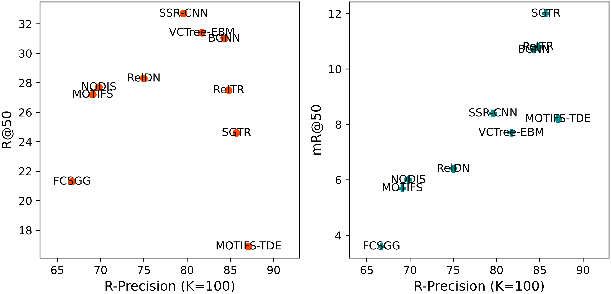

Recall@K (widely-used)
Recall@K is widely used to evaluate scene graph generation methods. It calculates the fraction of ground truth triplets that appear in the top K confident triplet predictions. Due to the long tail issue in the scene graph dataset such as Visual Genome, mean Recall@K is proposed. However, both Recall@K and mean Recall@K have limitations, as they critically compare the predicted triplet set with the ground truth triplet set and are thus sensitive to noise and bias in the dataset annotations

R-Precision (new!)
Therefore, we propose R-Precision based on GICON for scene graph generation evaluation. R-Precision measures the retrieval accuracy when retrieving the matching image from K image candidates using the generated scene graph as a query. We use the scene graph and image representations provided by GICON to compute the similarity score for retrieval. Compared to triplet-oriented metrics, R-Precision based on GICON is more robust to the perturbation of single triplets.
New Benchmark of Scene Graph Generation Models
We benchmark different scene graph generation models on the Visual Genome dataset. 6 two-stage methods and 4 one-stage methods are re-evaluated using R-Precision (K=10/50/100) for location-free scene graphs (LF Graph) and location-bound scene graphs (LB Graph).